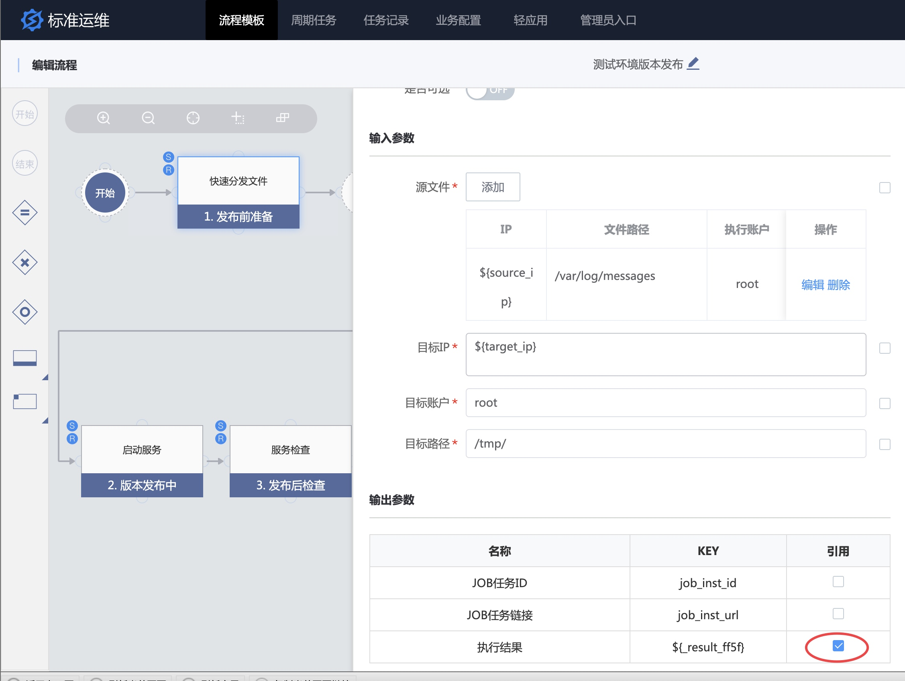

一次标准的应用交付自动化案例
情景
应用发布是运维这个岗位的职能之一，发布关联多个 ITIL 系统的功能模块，比如发布单、监控的告警屏蔽、DB 变更、业务内公告、统一登录入口等，频繁在多个系统间切换，不但影响效率而且容易出错，同时无法可视化查看发布进度以及事后的回溯。
接下来，一起看下标准运维是如何解决这些痛点。
前提条件
术语解释
- 流程模板 : 标准化的资源和应用交付模式，通过资源编排引擎，实现对资源的创建、配置，实现自动化交付资源或应用，行业中一般称之为
pipeline、资源编排模板，比如一次发布任务可以编排为一个流程模板。 - 标准插件 : 多个执行节点通过编排规则实现流程模板，其中的执行节点称之为 标准插件，比如
执行脚本为一个标准插件
更多详见 术语定义
操作步骤
- 梳理：梳理标准化模板
- 建模：新建流程模板
- 执行：执行流程
1. 梳理标准化模板
配置管理标准化中提到，运维服务“四化建设”的标准化包含配置管理、发布、变更、故障处理、监控告警等场景的流程制定。以发布为例，通过流程图梳理应用交付的流程。
分为发布前准备、发布中、发布后检查三部分。

2. 创建流程模板
为了简化演示，将流程图中的关键节点在标准运维的业务流程模板中体验出来。
选择[流程模板] -> [业务流程]，点击新建来创建业务流程模板。
从左侧标准插件区，选择发布流程中需要的标准插件作为流程的节点，比如执行作业, 向右拖动到画布。

选择作业平台中准备好的 作业模板，然后新建 全局变量，并将全局变量填充到节点的参数中。

按照上述步骤，完成一个应用发布的流程模板。

标准运维内置了 CMDB、作业平台、通知等标准组件，如果不在此列的，需要开发标准运维插件来 集成企业内部 ITIL 系统。
这里重点说明 全局参数 和 流程分支。
2.1 全局参数
服务器发生故障后，保障下一次应用发布获取最新的 IP 列表，可以通过 IP 选择器实现。

2.2 流程分支
应用发布过程中，执行成功 和 执行失败的处理分支不同，可以通过流程分支功能对上一步执行结果为真或为假来判断。

提前引用上一步流程节点的输出参数执行结果，将其用于上图中的流程分支表达式。

3. 执行流程
在业务流程列表中，点击新建任务

点击执行任务流程
扩展阅读
上下文传参
将一个流程节点的输出作为另一个流程节点的输入。
比如第 1 步输出 MD5 值 ，第 2 步分发版本，第 3 步使用第 1 步中生成的 MD5 值 来校验版本的一致性，效果如下：

主要用到标准运维流程节点中的 引用输出参数，引用第 1 步中的 release_md5 变量。

release_md5变量需要提前在作业模板中设置，如下图：